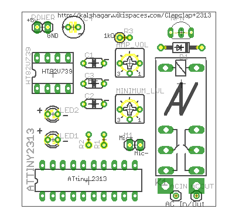
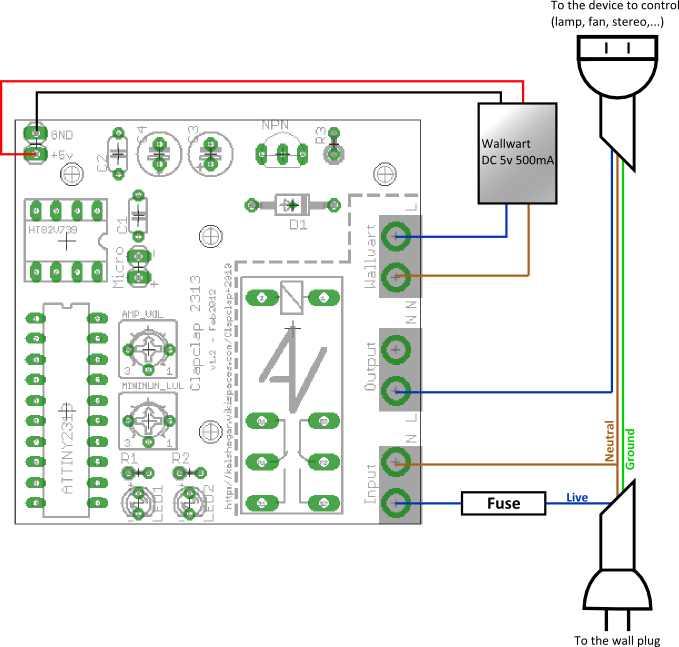

How to build your own Clapclap2313
Ok, so you made your own board using the eagle files or you bought one from me (can't thank you enough!). Let's go to the assembly now..Disclaimer
Dear customer or curious tinkering brother or sister, this is the time for the usual disclaimer, so please take time to read this.We provide you with this board with no guarantee, none implicit nor explicit. We don't guarantee that it will work for any duration, purpose, or even that it will work at all. This is provided as a novelty, a curiosity and a tool for curious people to play with.
Since you are playing with AC, please be double, triple sure of what you do. You might get hurt or worse, and your house or the one of your loved ones might become a pile of ashes. So think in advance and be careful. Respect the ratings, and always underestimate them. Don't overload the relay, 100 W is a max I would recommend to not cross (even though theoretical limit is 10x that for 220 v). Keep away from water, kids, pets, humidity, stupid people and don't use unattended. The whole circuit must be in a closed box, no parts apparent, out of careless reach but still under surveillance.
In short, you are responsible for using this in any case you find suitable, left to your own judgement but be careful, it is dangerous. We accept no kind of liability nor responsibility for whatever might happen to you, your belongings or whatever else might be damaged by the usage of this item.
Ok, this is scarry but it's just a way of saying "if you don't know what you're doing, be safe, wise and just don't do it". And whatever happens, don't even think of suing me.
Usage reminder
This item didn't pass any safety test, it's a novelty product, use at your own risk. Don't use unattended, keep avoid from kids, pets, water. Use only inside.
Due to copper thickness on the board and safety spacing, don't use this item to drive a load of more than 100W. Be careful to not overload the circuit itself or the load side which could result in fire and destruction.
Parts list
The mandatory parts :
- The Clapclap2313 board
- ATtiny2313 x1 (ATTINY2313)
- Holtek audio amp HT82V739 x1 (HT82V739)
- A electret microphone x1 (M1)
- A relay (my case 5v that drives up to 5A/220V) (K1)
- A NPN transistor to drive the relay ２ＳＣ２１２０－Ｙ (NPN)
- A flyback diode, any is ok as long as it can handle 5v. My case was a 1N4007 which is way overspec but does the job. (D1)
- 5 kOhm potentiometer x2, something like this (AMP_VOL, MINIMUM_VOL)
- 1k ohm (R3) from uC to the transistor
- Capacitors for the amp :
- 47 uF x1 (C3)
- 1 uF x2 (C1, C2)
- A wallwart or other power source that provides 5v and 150mA minimum (the relay needs 100 mA, give 20mA for the other buddies and take some provision in case). Just solder it to the power connector on the top left but be careful of the polarity!
- This circuit does not have a regulation circuit so beware of cheap unregulated 5v wallwart that might kill your microcontroller. You might want to add some pre-stage of regulation with the legendary LM7805. FYI, none of the one I made until now have a regulation circuit and both are still working fine, but don't take it as a rule.
- 470 ohm resistor x2 (R1, R2)
- 3mm Led x2 (LED1, LED2)
- Power rail stabilization capacitor 100 uF%20 (C4)
Notabene : the image on the right is of the latest version of the board (v1.1). In case you have a 1.0, the big difference is the labels that are missing and the additional trace and holes on the bottom right that allow to solder directly the AC wires. Also the AC traces to the relay are thicker.
Notabene for version 1.2 : the part behind the dashed line that contains the entry pins for AC and the relay is the hot zone with high voltage. Do not touch when plugged to the power ! The other side with the micro controller is 5v cold zone, ok to touch but be careful to not shortcut anything or inadvertently touch the hot deadly zone.
Power
This little toy requires power to work of course. Feed it with something that can give 5 V and 150mA at minimum. The bottom schema shows hot to wire the power wires. A few thing to pay attention:- There is no LM7805 or other voltage regulator plugged. I've not put on any of my versions, and they're all working fine. It doesn't mean it's a best practice (on the contrary!). On the cheap side you could wire a diode on one of the power pin : you would be protected of reverse wiring and you diminish voltage of 0.7v (or go for a zener)
- In short if you prefer be safe than sorry : put a voltage regulator or a zener diode
- You will want to connect wires to your wallwart. One trick : open it ! With a small saw, cut where the pins that go in the power plug are : you will most likely see 2 wires soldered from those pins to the internals of the wallwart. Solder directly on them and glue/fix/tape it according your religion. It makes things much more professional.
- Again, it's AC : be careful of short cut, touching it while powered, conducting internal of the box, etc...

How to wire with the power plug (version <= 1.1 of the board) : I have to redraw it each time, now it's done once and for all

How to wire with the power plug (version 1.2 of the board)
Assembly rules
Here's a personal suggestion on which order to follow, but you can go your way too : nothing special, you can plug it the way you want. My advice is the smaller firsts, and from the center to the outside.- Check you have all components ready at hand and properly identified
- Start by soldering the capacitors C1, C2, C3, C4 and the potentiometers,
- Microphone wire, flyback diode D1, NPN transistor and R3
- NB: to determine the microphone (-) look at the bottom, it's the pin that is connected to the case
- NB: use 5 to 15 cm wire to connect the microphone and the board, and avoid having the wire being too close to the main currents (generate parasites and a nice but useless 50Hz clap clap!)
- Leds and their current limiter resistors R1 and R2 if you want the bling bling (not mandatory)
- Microcontroller and OpAmp. Be careful to solder them in the right direction. Be careful to not overheat them. In case you want to be on the safe side, use IC sockets.
- The relay should be the last component you solder on the board
- Now on the wires :
- Plug the 5v from the wallwart to the North-West corner. Beware of polarity! I personally crack open the wallwart and plug directly the wires to the main, but that's dangerous so do it your own risk
- The main wires from the wall go to the South-East holes, the output wires are just above.
- On a general note, you might want to put a fuse on the way of the main, just to stay safe.
Sensitivity setup
There is 2 potentiometer on the board, and you must use them to setup the sensibility of the clap clap.- The AMP_VOL is how much the sound from the microphone is amplified, it would correspond simply to the "volume" potentiometer on a regular amplifier. Setting it half way should be ok.
- The MIN_LVL is the level above the which the comparator will detect the peak and consider it a "clap". You can set it to min (you will see the leds blinking crazy fast) and then augment little by little and test so that your hand clap at the distance you want trigger the stuff.
Final result

A sample of final product : board is v1.0, the power plug is not connected. You can see that it's another type of potentiometer I used but same value. The microphone is connected on a wire and not directly on the board, which is more practical for enclosure.